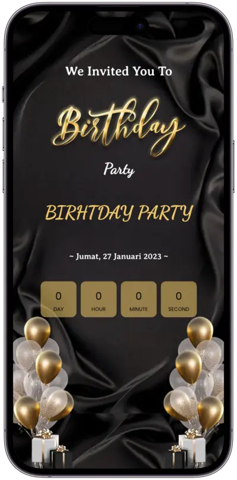
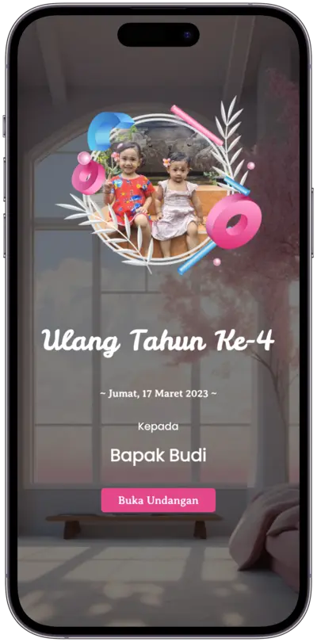
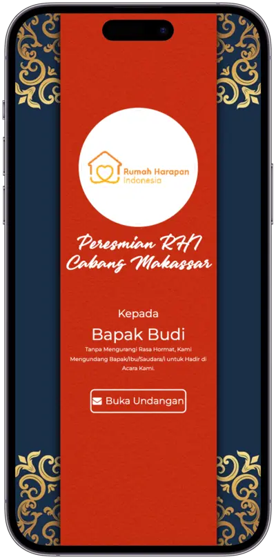
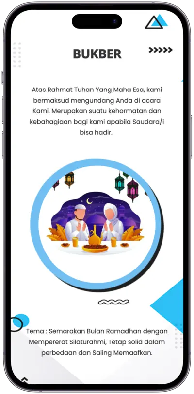
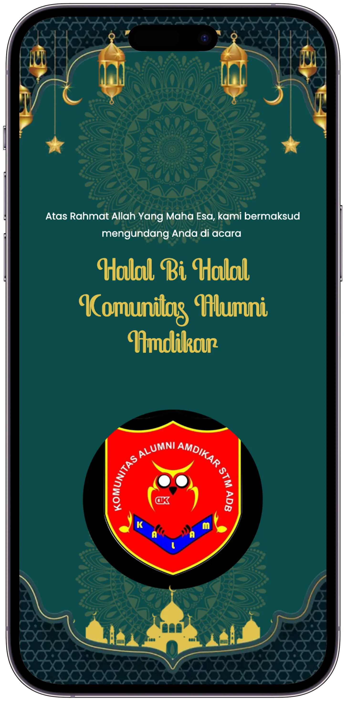
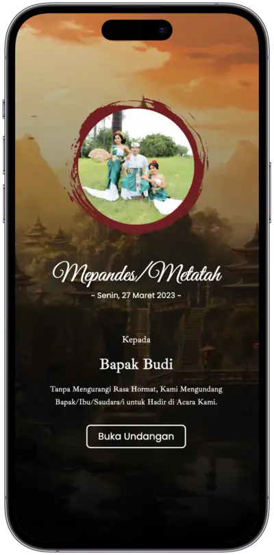
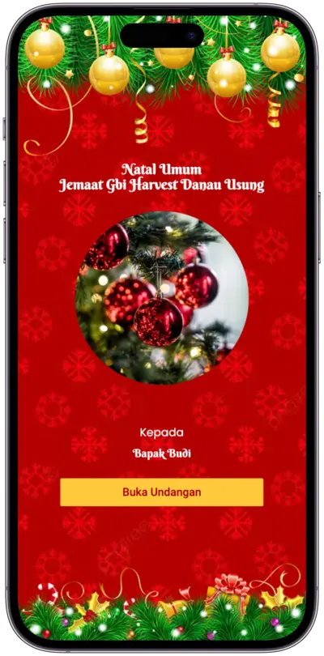
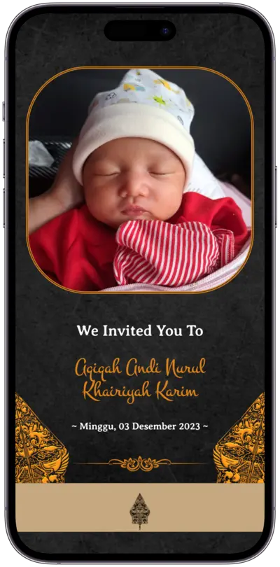
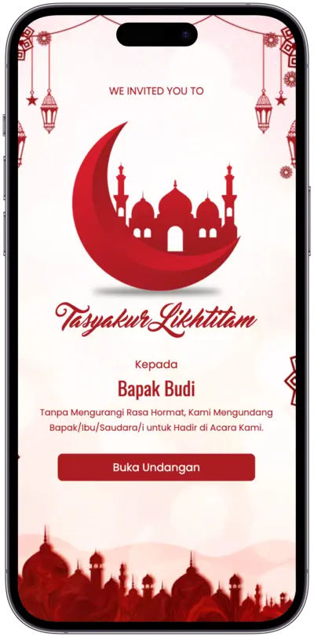
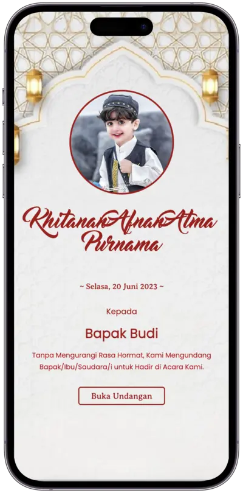

Pilihan Kategori
13 Kategori Acara Spesial
Klik langsung pada kategori acara di bawah untuk melihat pratinjau tema premium secara live.
.webp)
Pernikahan
Desain elegan & romantis untuk hari paling bahagia dalam hidup Anda.
Wisuda
Rayakan pencapaian akademis bersama keluarga dan sahabat terkasih.

Ulang Tahun Dewasa
Perayaan ulang tahun modern, estetik, dan meriah untuk orang dewasa.

Ulang Tahun Anak
Desain penuh warna-warni ceria dengan bermacam elemen lucu kesukaan si kecil.

Peresmian
Undangan formal untuk grand opening bisnis, kantor baru, maupun peluncuran brand.

Bukber
Tema hangat bernuansa Ramadhan penuh berkah untuk mempererat tali silaturahmi.

Halalbihalal
Sambut hari raya kemenangan Idul Fitri bersama seluruh sanak saudara.

Mapendes
Desain khusus bernuansa sakral Hindu Bali untuk upacara adat.

Natal
Tema damai penuh suka cita perayaan natal kudus bersama keluarga dekat.

Aqiqah
Sambut kelahiran buah hati dengan nuansa Islami yang teduh dan menggemaskan.

Tasyakuran
Bagikan rasa syukur atas rumah baru, kehamilan, maupun hajat syukuran lainnya.

Khitan
Katalog bertema jagoan pemberani untuk merayakan tasyakuran walimatul khitan.

Custom Acara / Event
Punya perayaan unik tersendiri? Kami siap mewujudkan tema spesial khusus sesuai visi dan imajinasi kreatif Anda. Konsultasikan langsung lewat WhatsApp.